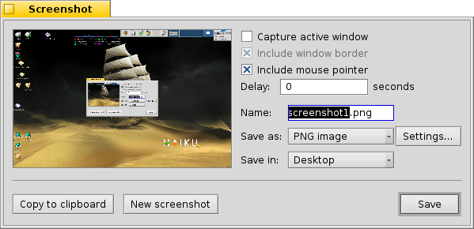

Українська
Українська Català
Català Deutsch
Deutsch English
English Español
Español Français
Français Italiano
Italiano Magyar
Magyar Polski
Polski Português
Português Português (Brazil)
Português (Brazil) Română
Română Slovenčina
Slovenčina Suomi
Suomi Svenska
Svenska 中文 ［中文］
中文 ［中文］ Русский
Русский 日本語
日本語 Знімок екрану (Screenshot)
Знімок екрану (Screenshot)
| Deskbar: | ||
| Розташування: | /boot/system/apps/Screenshot /bin/screenshot | |
| Налаштування: | ~/config/settings/screenshot |
Скріншоти виконуються при запуску додатку Знімок екрану (Screenshot) або при натисканні клавіші PRINT.

У панелі Знімку екрана (Screenshot) можна вибрати чи робити знімок цілого екрану чи тільки активного вікна та вирішити чи включати туди межі вікна і курсор мишки. Ви також можете вказати затримку перед виконанням знімку.
Нижче потрібно вказати формат та місце розташування знімка екрану що буде використовуватись при натисканні кнопки . Замість зберігання знімку на диск Ви можете обрати кнопку з метою прямого вставляння знімку до іншого додатку або вибрати кнопку .
Всі настройки запам'ятаються до наступного разу, коли Ви будете робит знімок за допомогою ось таких зручних гарячих клавіш:
| зробити скріншот без затримки і запустити панель Знімок екрану (Screenshot). | ||
| SHIFT PRINT | виконати скріншот мовчки (без відкриття панелі) з врахуванням останніх використаних налаштувань. | |
| CTRL PRINT | також виконати скріншот мовчки зі збереженими налаштуваннями, але замість збереження файлу зкопіювати його до буферу обміну. |
 Отримання скриншоту з Терміналу.
Отримання скриншоту з Терміналу.
Існує спеціальний додаток для командної стрічки screenshot який працює з Терміналу або скрипта.
screenshot --help показує знайомі опції в якості параметрів:
~> screenshot --help
screenshot [ОПЦІЇ] [ФАЙЛ] створює растрове зображення поточного екрану
ФАЙЛ є опціонально шлях / назва що використовується автоматично. Існуючий файл з таким самим іменем буде переписаний без попередження. Якщо ФАЙЛ не отримано скриншот буде записано з типовим іменем до користувацької директорії home.
ОПЦІЇ
-m, --mouse-pointer включаючи курсор мишки
-b, --border включаючи межу вікна
-w, --window захоплення активного вікна замість цілого екрану
-d, --delay=seconds зробити знімок після визначеної затримки [в секундах]
-s, --silent зберігає знімок без показу вікна додатку
-f, --format=image надає формат зображення для збереження як
[bmp], [gif], [jpg], [png], [ppm], [tga], [tif]
-c, --clipboard копіювати скриншот до системного буферу обміну без показування вікна додатку
Зауваження: ОПЦІЯ -b, --border дає ефект тільки при використанні з опцією -w, --window